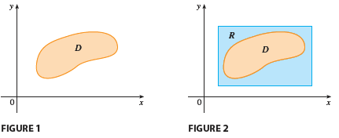
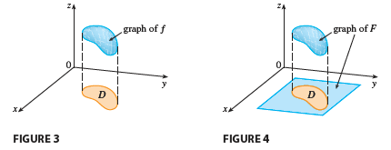

For single integrals, the region over which we integrate is always an interval. But for double integrals, we want to be able to integrate a function \(f\) not just over rectangles but also over regions \(D\) of more general shape, such as the one illustrated in Figure 1.

We suppose that \(D\) is a bounded region, which means that \(D\) can be enclosed in a rectangular region \(R\) as in Figure 2. Then we define a new function \(F\) with domain \(R\) by \[ F(x, y) = \begin{cases} f(x, y) & \text{if } (x, y) \text{ is in } D \\ 0 & \text{if } (x, y) \text{ is in } R \text{ but not in } D \end{cases} \tag{1} \]
If \(F\) is integrable over \(R\), then we define the double integral of f over D by \[ \iint_D f(x, y) dA = \iint_R F(x, y) dA \tag{2} \] where F is given by Equation 1.
In the case where \(f(x, y) \ge 0\), we can still interpret \(\iint_D f(x, y) dA\) as the volume of the solid that lies above \(D\) and under the surface \(z = f(x, y)\) (the graph of \(f\)). You can see that this is reasonable by comparing the graphs of \(f\) and \(F\) in Figures 3 and 4 and remembering that \(\iint_R F(x, y) dA\) is the volume under the graph of \(F\).

Figure 4 also shows that \(F\) is likely to have discontinuities at the boundary points of \(D\). Nonetheless, if \(f\) is continuous on \(D\) and the boundary curve of \(D\) is “well behaved” (in a sense outside the scope of this book), then it can be shown that \(\iint_R F(x, y) dA\) exists and therefore \(\iint_D f(x, y) dA\) exists. In particular, this is the case for the following two types of regions.